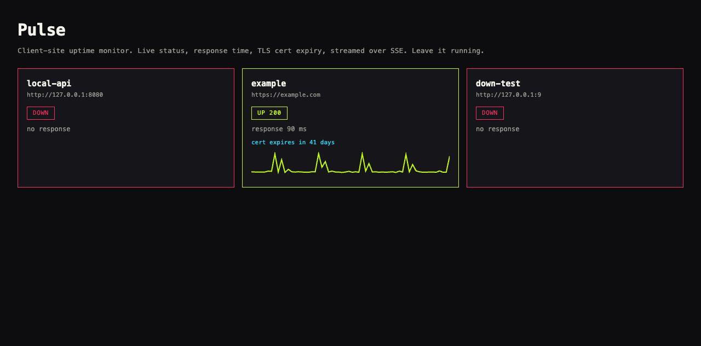

FILE / 05-PULSE · uptime monitor
Pulse
Uptime and response monitor
After you deploy something at a client site, someone needs to know when it stops answering. Pulse watches the endpoint and keeps a live heartbeat. The readout below updates on its own, every seven hundred milliseconds.
"It did not page us. Pulse already had."Incident, avoided
LIVE APP

Pulse monitoring response time, cert expiry, and SSE status.
OSCILLOSCOPE · live probe
--ms